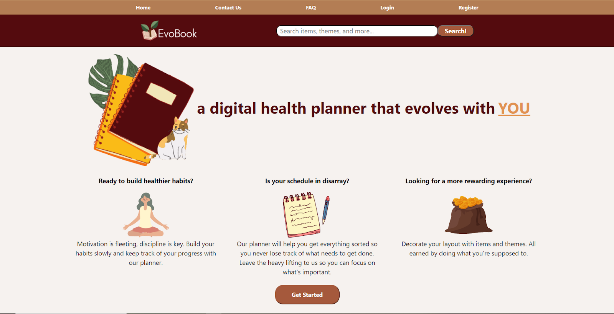
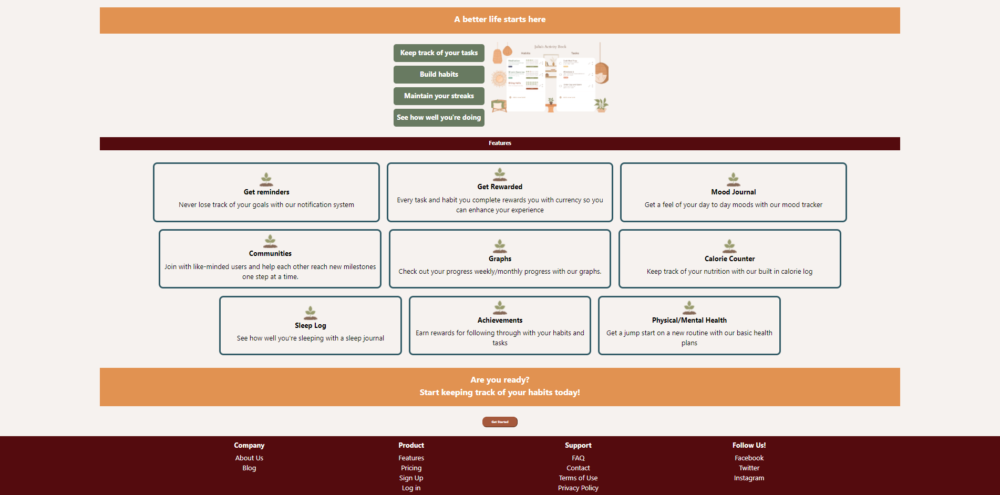

EvoBook - Digital Health Planner
Software Engineering Class Project | January 2021 – May 2021
Developed a cloud-deployed, full-stack digital health planner aimed at enhancing users' productivity and health tracking. Implemented a modern, responsive user interface with React and employed Docker for containerization, ensuring seamless scalability on Google Cloud Platform. Managed version control using GitHub to facilitate efficient team collaboration and code integrity.
- Utilized React for front-end development to create an interactive user experience.
- Applied Docker for containerization, allowing for easy deployment and scaling on the cloud.
- Employed GitHub for version control, enhancing teamwork and project manageability.
Further enhancing the EvoBook, additional features were added such as a mood journal, calorie counter, and custom reminders to support users in their health and wellness journey. The platform offers a community-driven environment where users can share experiences and motivate each other towards personal goals.
